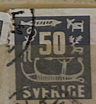
| SOURCE | TITLE| IMAGE MATCH | click to source page |
| Find Your Stamps Value | Value of sverige 65 stamps | 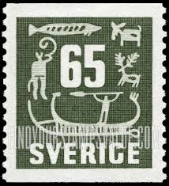 |
| iStock | Sweden Postage Stamps Stock Photo - Download Image Now - Above, Austria, Austrian Culture - iStock | 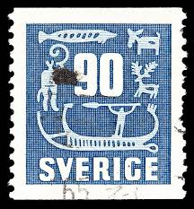 |
| Colnect | Stamp: Rock Carvings (Sweden(Rock Carvings) Mi:SE 398,Sn:SE 470,Yt:SE 391,Sg:SE 350,AFA:SE 404,Fac:SE 461,Un:SE 391 📮 | 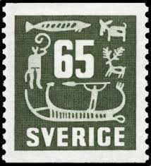 |
| Find Your Stamps Value | Value of sverige 90 ore stamps | 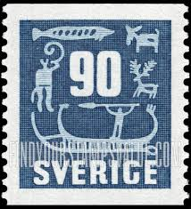 |
| nordfrim.com | Buy Sweden - Collection of coils | 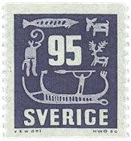 |
| Shutterstock | Sweden Circa 1954 Postage Stamp Printed Stock Photo 137828423 | Shutterstock | 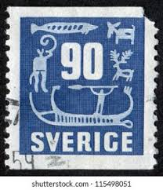 |
| Find Your Stamps Value | Value of sverige 75 stamps | 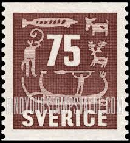 |
| Shutterstock | Sweden Circa 1970 Stamp Printed Sweden Stock Photo 725498395 | Shutterstock | 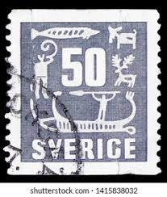 |
| Ships on Stamps Unit | Maritime Topics On Stamps : Viking Boats | 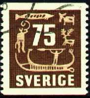 |
| iStock | Sweden Postage Stamps Stock Photo - Download Image Now - Above, Austria, Austrian Culture - iStock | 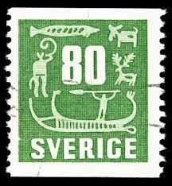 |
| Shutterstock | Sweden Circa 2001 Stamp Printed Sweden Stock Photo 72800758 | Shutterstock | 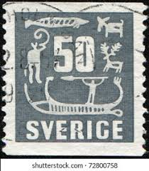 |
| Alamy | SWEDEN - CIRCA 1954: stamp printed by Sweden, shows Rock Carvings, circa 1954 Stock Photo - Alamy | 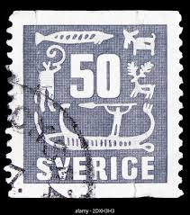 |
| Find Your Stamps Value | Value of sverige 60 stamps | 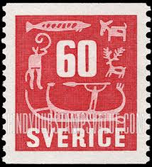 |
| Etsy | Stamp Art, Gray, Cave Paintings, 50 Ore, Sweden, Used Stamps - Etsy UK | 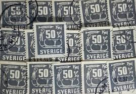 |
| Etsy | Buy Petroglyph Art Stamp Online In India - Etsy India | 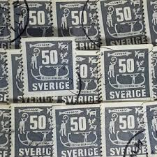 |
| Shutterstock | Sweden Circa 1954 Stamp Printed Sweden Stock Photo 171870158 | Shutterstock | 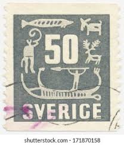 |
| eBay | SA08c Sweden 1980 Swedish Automobile History mint minisheet | eBay | 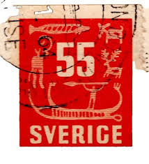 |
| iStock | German Stamp Shows A Protruding Nail In Plank Stock Photo - Download Image Now - iStock | 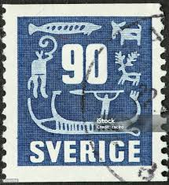 |
| Shutterstock | 8+ Hundred Caveman Carving Royalty-Free Images, Stock Photos & Pictures | Shutterstock | 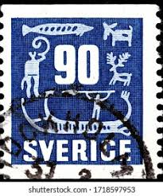 |
| Dreamstime.com | 104 Swedish Stamps Stock Photos - Free & Royalty-Free Stock Photos from Dreamstime | 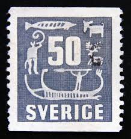 |
| Dreamstime.com | 166 Horn Carvings Stock Photos - Free & Royalty-Free Stock Photos from Dreamstime | 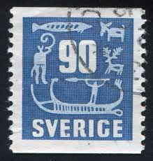 |
| Dreamstime.com | Deer Ore Stock Photos - Free & Royalty-Free Stock Photos from Dreamstime | 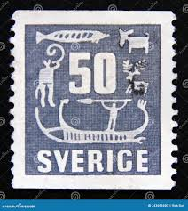 |
| Shutterstock | 90 Print: Over 834 Royalty-Free Licensable Stock Photos | Shutterstock | 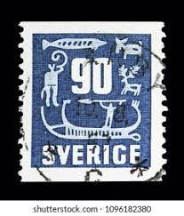 |
| iStock | 30+ Postage Stamp Global Communications Swedish Culture Old Fashioned Stock Photos, Pictures & Royalty-Free Images - iStock | 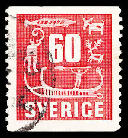 |
| Alamy | Spear antelope hi-res stock photography and images - Alamy | 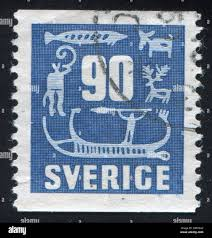 |
| HipStamp | Sweden #468 Rock Carvings Used | Europe - Sweden, General Issue Stamp / HipStamp | 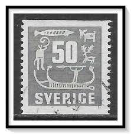 |
| Shutterstock | Koleksi dari IgorGolovniov | Kontributor Shutterstock | 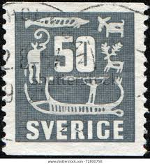 |
| Dreamstime.com | 1,213 Postal Stamp Sweden Stock Photos - Free & Royalty-Free Stock Photos from Dreamstime - Page 7 | 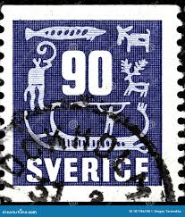 |
| HipStamp | Sweden Sc#468 Used | Europe - Sweden, General Issue Stamp / HipStamp | 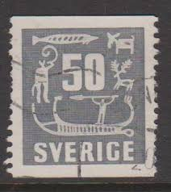 |
| Dreamstime.com | 1,213 Postal Stamp Sweden Stock Photos - Free & Royalty-Free Stock Photos from Dreamstime - Page 2 | 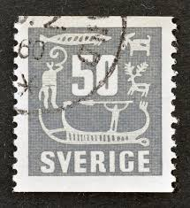 |
| ebid.net | GB, Victoria Cross, white 1990, 20p, #3 on eBid United States | 206204418 | 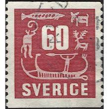 |
| Shutterstock | 1+ Thousand Antelope Stamp Royalty-Free Images, Stock Photos & Pictures | Shutterstock | 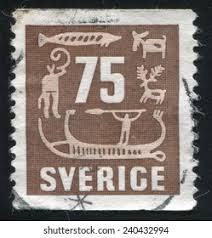 |
| iStock | Slovak Stamp With Coat Of Arms Senica Stock Photo - Download Image Now - Adult, Art, Arts Culture and Entertainment - iStock | 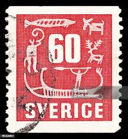 |
| iStock | Sweden Postage Stamps Stock Photo - Download Image Now - Above, Austria, Austrian Culture - iStock | 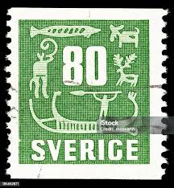 |
| Dreamstime.com | Cave Painting, Aboriginal Art Serie, Circa 1973 Editorial Photography - Image of people, postmark: 150942962 | 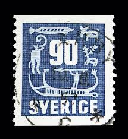 |
| Osta | Rootsi 1954, standard, templiga (196325246) - Osta.ee | 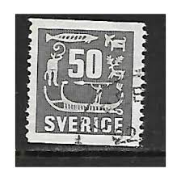 |
| Shutterstock | 3+ Thousand Up To Date Stamp Royalty-Free Images, Stock Photos & Pictures | Shutterstock | 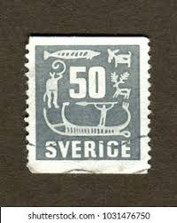 |
| Alamy | Antique drawing deer hi-res stock photography and images - Alamy | 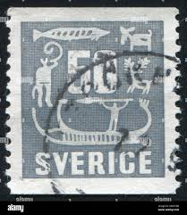 |
| Dreamstime.com | Tumba rupestre antigua imagen de archivo editorial. Imagen de cultura - 362450269 | 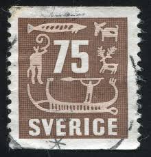 |
| eBay | SWEDEN 1957 Issue 55 SVERIGE Stamp, Postmarked 1961 Ms Kungsholm to USA | eBay | 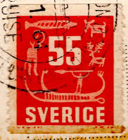 |
| Shutterstock | Sweden Stamps: Over 5,170 Royalty-Free Licensable Stock Photos | Shutterstock | 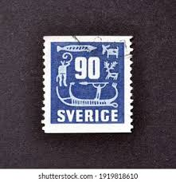 |
| Alamy | Seal animal outline hi-res stock photography and images - Page 5 - Alamy | 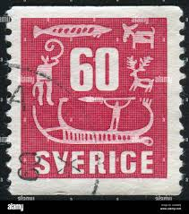 |
| Redbubble | Sverige Sweden Blue Vintage 90 Postage Stamp" Sticker for Sale by red-amber65 | Redbubble | 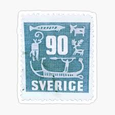 |
| Alamy | Seal animal drawing hi-res stock photography and images - Page 5 - Alamy | 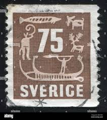 |
| eBay | Vintage 1986 Christmas Plate~Julen Rorstrand Sweden~Collection~Limited Edition | eBay | 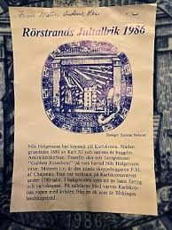 |
| eBay | Gray Used Swedish Stamps for sale | eBay | 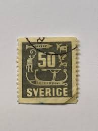 |
| 1970 Road America - Swede Savage gets AAR's best TransAm finish - 2nd place | 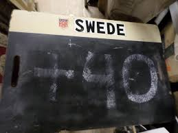 | |
| Alamy | Deer postage stamp hi-res stock photography and images - Page 6 - Alamy | 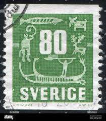 |
| Alamy | SWEDEN - CIRCA 1954: A postage stamp printed in Sweden, shows Rock Carvings, circa 1954 Stock Photo - Alamy | 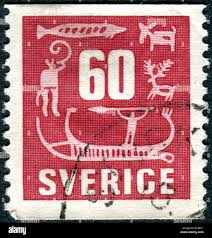 |
| Shutterstock | Viking Stamp: Over 386 Royalty-Free Licensable Stock Photos | Shutterstock | |
| Shutterstock | Sweden Circa 1957 Postage Stamp Sweden Stock Photo 2104524659 | Shutterstock | |
| The RainKey | Sweden 1954 Rupestrial Engravings of the Provice of Bohuslan StampRK-WS-1433 – The RainKey | |
| Batch #3 of cards. I have a few more products left to play with 😁 | ||
| Etsy | Buy Sweden Ore Stamp Online In India - Etsy India | |
| Alamy | Deer postage stamp hi-res stock photography and images - Page 5 - Alamy | |
| seemystamps.com | See My Stamps! - A Place to Show Off Your Stamp Collection | Page 48 | |
| Flickr | great stamp Sverige Sweden Brev Inrikes (Rock Carvings/Tan… | Flickr | |
| B McLean | 55ø Red [1954 Rock Carving] - £0.20 : B. McLean - Stamps for Collectors, Online Stamp Shop | |
| Northwind Stamps | SW01945 Sweden Scott # 194 var. VF Used. Gustav Vasa – Northwind Stamps |